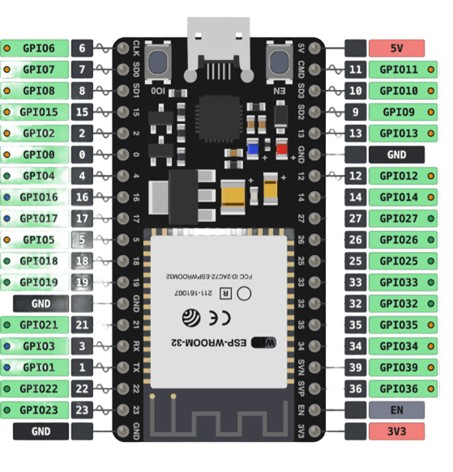

Espressif · ESP32-WROOM-32 (38 Pines)
Filtra por categorías arriba o haz clic sobre cualquier pin para ver sus conexiones, buses compatibles y alertas técnicas.

Haz clic en cualquiera de los 38 terminales para revisar su mapeo GPIO, canales analógicos (ADC/DAC), buses de comunicación y recomendaciones de conexión.